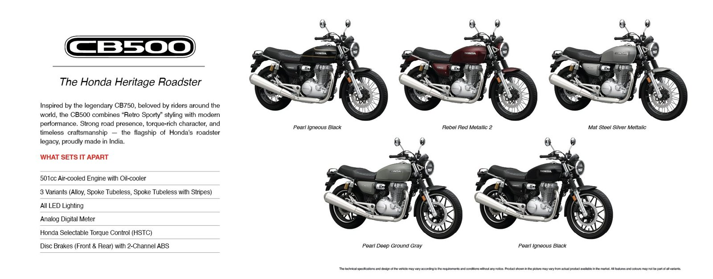

Novedades › Honda CB500 / GB500
Novedades · Retro roadster monocilíndrica
Honda CB500 / GB500: la retro monocilíndrica de 501 cc que viene a Europa
Presentada en India el 24 de julio de 2026 y lanzada allí en septiembre, la CB500 es la hermana mayor de la GB350S: una monocilíndrica de 501 cc refrigerada por aire y aceite, con 28 CV, 43,3 Nm y menos de 200 kg. En Europa se espera como GB500S para 2027.

La respuesta rápida
La nueva Honda CB500 es un roadster retro monocilíndrico, heredero directo del esquema de la GB350S y fabricado en la planta india de Honda. Su motor es un monocilíndrico de 501 cc refrigerado por aire y aceite que rinde 28 CV (20,6 kW) y 43,3 Nm de par, enviados a la rueda trasera por una caja de 5 velocidades con embrague antirrebote y control de tracción HSTC regulable. Se anuncia en tres versiones (llantas de fundición, radios cruzados tubeless y tope de gama con pinturas multicolor), con ABS de doble canal y un peso por debajo de 200 kg. En India se lanzó en septiembre de 2026 desde 275.000 rupias (≈ 3.000 €); la llegada a Europa, previsiblemente como GB500S, se espera para 2027 y aún no está confirmada por Honda.
No la confundas con la CB500 bicilíndrica (471 cc, refrigerada por líquido, ≈ 47 CV) de la CB500 Hornet, NX500, CL500 o Rebel 500: esta nueva 500 monocilíndrica no comparte nada con ella salvo el número del nombre. El "500" retro pertenece a la serie india GB/CB.
De la GB500 rumoreada a la CB500 real
La prensa japonesa (vía Webike) adelantó en verano de 2025 que la versión de 500 cc de la GB350S existía y se presentaría en otoño, con unos 30 CV y un diseño algo distinto al de la 350; Moto1Pro lo recogió como "la Honda GB500 llega en otoño: ¡confirmado!". El resultado oficial se materializó primero en India: la CB500 presentada el 24 de julio de 2026 y lanzada allí en septiembre. Sobre el papel se queda un punto por debajo del rumor (501 cc y 28 CV), pero el argumento real es el par de 43,3 Nm, casi un 50 % más que el de la 350.
Motor
| Cilindrada | 501 cc, monocilíndrico de 4 tiempos |
| Potencia | 28 CV (20,6 kW) |
| Par | 43,3 Nm |
| Refrigeración | Aire y aceite (air/oil-cooled) |
| Cambio | 5 velocidades |
| Embrague | Antirrebote (slipper clutch) |
| Electrónica | HSTC (control de tracción regulable), ABS de doble canal |
| Carnet | A2 |
La cifra clave es el par, no la potencia. Con 43,3 Nm, la 500 deja a la GB350S (29 Nm) con un 50 % más de par y se queda sorprendentemente cerca del Royal Enfield Interceptor 650 (52,3 Nm desde 648 cc y dos cilindros). El motor sigue la arquitectura de carrera larga del 348 cc (70 × 90,5 mm) de la GB350S: ensanchar el diámetro hasta 84 mm manteniendo la carrera da exactamente 501 cc. Honda lo ha ajustado para tirar en bajas y medias revoluciones, no para brillar en cifras punta.
Honda no ha comunicado el régimen de potencia ni de par máximo. La prensa india lo sitúa en torno a las 3.000 rpm para el par; trátalo como referencia, no como dato oficial.
Ciclística, frenos y peso
- Bastidor de tubos de acero con horquilla telescópica delantera con fuelles (detalle retro) y doble amortiguador trasero con depósitos separados.
- Ruedas 19" delante y 17" detrás, con neumáticos Maxxis en 100/90-19 y 150/70-17.
- Un disco por rueda con ABS de doble canal.
- Peso: por debajo de 200 kg (sin cifra oficial; la GB350S declara 178 kg con el depósito lleno).
Estética y equipamiento
La CB500 sigue el libreto de la CB350, pero una talla más grande: faro redondo LED, depósito de gasolina en forma de lágrima, asiento monoplaza acanalado, manillar ancho con espejos cromados y escape cromado. El cuadro es analógico-digital con conectividad Honda RoadSync al móvil, común a las tres versiones.
Versiones y precio en India
| Alloy (llantas de fundición) | 275.000 ₹ (≈ 3.000 €) |
| Spoke (radios tubeless) | 299.900 ₹ |
| Spoke with Stripes (tope de gama) | 301.900 ₹ |
El precio es solo para el mercado indio y sirve de referencia del coste de fabricación, no de tarifa europea. Al fabricar en India, Honda tiene margen para competir en precio en su segmento.
La llegada a Europa: GB500S en 2027
La denominación GB500 fue registrada por Honda en noviembre de 2024 en la oficina de patentes de EE. UU. (12/11), en la EUIPO europea (14/11) y en Nueva Zelanda. La lógica es la misma que con la CB350, vendida aquí como GB350S: la CB500 india llegaría como GB500 o GB500S. Honda UK no quiso comentarlo.
- Fecha estimada: 2027, con presentación probable en EICMA como paso previo.
- Precio estimado: por encima de los 5.000 € (la GB350S cuesta actualmente 4.709 €).
- Podría sustituir a la GB350S en la oferta A2 europea.
- Contexto: la GB350S registró 573 matriculaciones en Alemania en el primer semestre de 2026 (puesto 28), pese a sus 21 CV: hay mercado para la retro sencilla.
El nombre GB500 tiene historia
No es la primera vez que Honda usa esas siglas. Entre 1985 y 1990 existió la GB500 Tourist Trophy, una café racer monocilíndrica de 500 cc refrigerada por aire con 38 CV, arranque a patada y culata de 4 válvulas, vendida en Japón (desde 1985), en EE. UU. (1989-90) y brevemente en Alemania como GB500 Clubman. Ya entonces montaba bastidor de tubos, horquilla con fuelles y llantas de radios: la receta que repite la nueva 500.
Conclusión
Honda responde exactamente a la crítica que recibió la GB350S (poca potencia para autovía) sin renunciar a la fórmula: un gran monocilíndrico de menos de 200 kg, con casi un 50 % más de par que la 350, embrague antirrebote, control de tracción y estética clásica. Si llega a Europa con un precio contenido, es una de las pocas monocilíndricas nuevas en el segmento modern classic y rival directo por concepto (más que por cifras) del Royal Enfield Interceptor 650 y la BSA Gold Star 650. La incógnita sigue siendo el precio europeo y la fecha oficial.
Fuentes
- Moto1Pro (ES) — La Honda GB500 llega en otoño: ¡confirmado! (agosto 2025)
- Autocar India (EN) — All-new Honda CB500 unveiled in India (julio 2026)
- Autocar India (EN) — Honda CB500 launched at Rs 2.75 lakh (septiembre 2026)
- Honda Motorcycle & Scooter India (EN) — Ficha oficial CB500
- Motorcycles.News (EN/DE) — Honda CB 500: 28 hp y el camino a Europa (julio 2026)
- MOTORRAD (DE) — Neue Retro-Honda mit Einzylinder: CB 500 aus Indien (julio 2026)
- Le Blog Moto (FR) — CB500 monocylindre néo-rétro, possible GB500 S en Europe (julio 2026)
- Cycle World (EN) — Honda GB500 Retro Roadster Planned for US (diciembre 2024)